Director Biographies
Mafiosos | Psychos | Outlaws | Thieves
Mafiosos
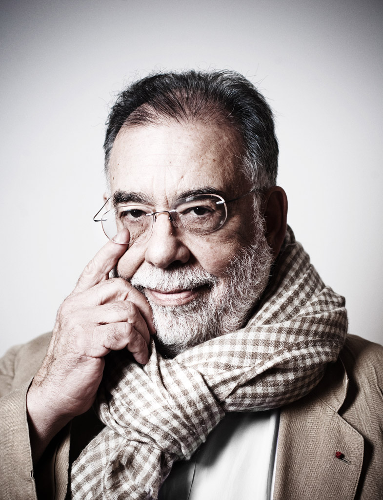
Francis Ford Coppola - The Godfather
Francis Ford Coppola (born April 7, 1939) is an American film director, producer and screenwriter. His directorial prominence was cemented with the release in 1972 of The Godfather, a film which revolutionized movie-making in the gangster genre, earning praise from both critics and the public before winning three Academy Awards. He further gained acclaim for directing films such as The Godfather PartII (1974), Apocalypse Now (1979), The Outsiders (1983) and Bram Stoker’s Dracula (1992).
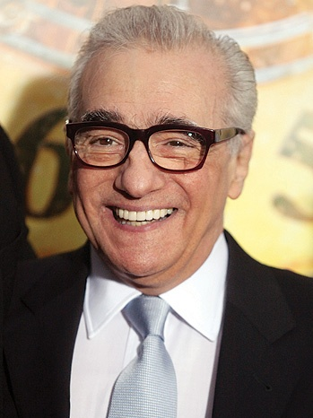
Martin Scorcese - Goodfellas & The Departed
Martin Charles Scorsese (born November 17, 1942) is an American director, producer, screenwriter, actor, and film historian, whose career spans more than 45 years. He is widely regarded as one of the most significant and influential filmmakers in cinema history. He has directed landmark films such as the crime film Mean Streets (1973), the vigilante-thriller Taxi Driver(1976), the biographical sports drama Raging Bull (1980), the black comedy The King of Comedy(1983), and Casino (1995).
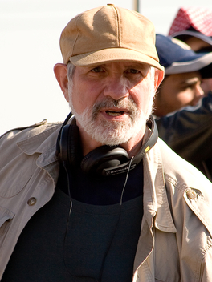
Brian De Palma - The Untouchables
Brian Russell De Palma (born September 11, 1940) is an American film director and screenwriter. In a career spanning over 40 years, he is best known for his suspense, psychological thriller and crime films. He directed successful and popular films such as the supernatural horror Carrie (1976), the thriller Blow Out (1981), the crime drama Scarface (1983) and the action spy film Mission: Impossible (1996).
Psychos
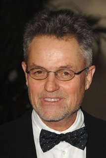
Robert Demme - The Silence Of The Lambs
Robert Jonathan Demme (born February 22, 1944) is an American filmmaker, producer and screenwriter. Demme rose to prominence in the 1980s with his comedy films Something Wild (1986) and Married to the Mob (1988). He became best known for directing The Silence of the Lambs (1991), for which he won the Academy Award for Best Director. He later directed the acclaimed films Philadelphia (1993) and Rachel Getting Married (2008).
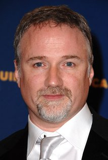
David Fincher - Seven & Gone Girl
David Andrew Fincher (born August 28, 1962) is an American film director, film producer, and television producer. He was nominated for the Academy Award for Best Director for the romantic fantasy drama The Curious Case of Benjamin Button (2008) and the drama The Social Network (2010). He is also known for having directed the psychological thriller Fight Club(1999), the mystery thrillers Zodiac (2007) and The Girl with the Dragon Tattoo (2011) and Gone Girl (2014), as well as being instrumental in the creation of the critically acclaimed U.S. television series House of Cards.
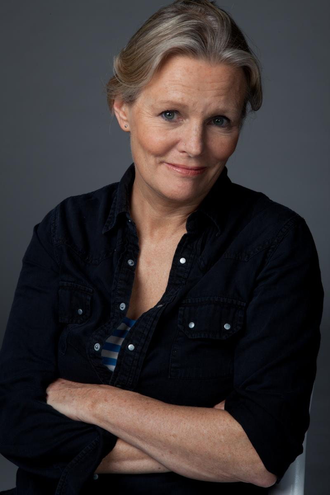
Mary Harron - American Psycho
Mary Harron (born January 12, 1953) is a Canadian filmmaker and screenwriter best known for her films I shot Andy Warhol, American Psycho and The Notorious Bettie Page.
Outlaws
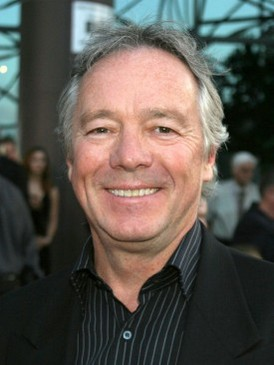
Christopher Cain - Young Guns
Christopher Cain (born Bruce Doggett; October 29, 1943) is an American screenwriter, actor, director, and singer. He is best known for directing The Next Karate Kid (1994), September Dawn (2007) and Pure Country 2: The Gift (2010).
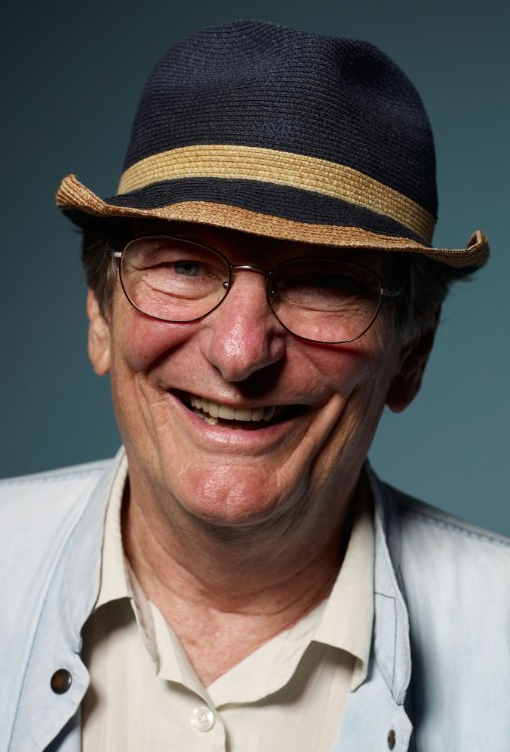
Fred Schepisi - Barbarosa
Frederic Alan "Fred" Schepisi (born 26 December 1939) is an Australian film director, producer and screenwriter. His credits include The Chant of Jimmie Blacksmith (1978), Roxanne (1987), Six Degrees of Separation (1993) and Last Orders (2001).
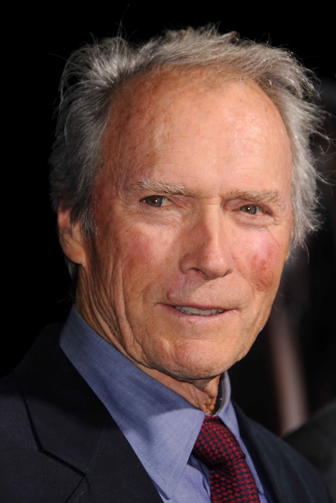
Clint Eastwood - Unforgiven
Clinton "Clint" Eastwood, Jr. (born May 31, 1930) is an American actor, film director, producer, musician, and politician. He rose to international fame with his role as the Man with no Name in Sergio Leone’s Dollars Trilogy of Westerns during the 1960s, and as antihero cop Harry Callahan in the five Dirty Harry films throughout the 1970s and 1980s. For his work in the Western film Unforgiven (1992) and the sports drama Million Dollar Baby (2004), Eastwood won Academy Awards for Best Director.
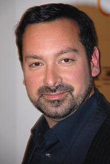
James Mangold - 3:10 To Yuma
James Mangold (born 1963) is an American film and television director, screenwriter and producer. Films he has directed include Walk the Line (2005), which he also co-wrote, The Wolverine (2013), and Girl, Interrupted (1999).
Thieves
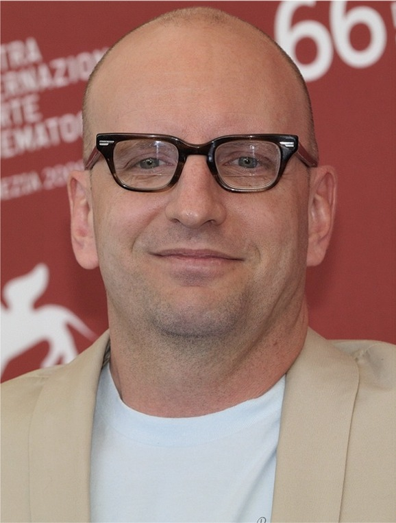
Steven Soderbergh - Ocean's Eleven
Steven Andrew Soderbergh (born January 14, 1963) is an American film producer, director, and screenwriter. His indie drama Sex, Lies, and Videotape (1989) won the Palme d’Or at the Cannes Film Festival, and became a worldwide commercial success, making the then-26-year-old Soderbergh the youngest director to win the festival's top award. He is best known for directing critically acclaimed commercial Hollywood films like the crime comedy Out of Sight (1998), the biographical film Erin Brockovich (2000), the crime drama film Traffic (2000).

David Mamet - Heist
David Alan Mamet (born November 30, 1947) is an American playwright, essayist, screenwriter, and film director. Feature films that Mamet both wrote and directed include Redbelt (2008), House of Games (1987) (which won Best Film and Best Screenplay awards at the 1987 Venice Film Festival and "Film of the Year" for the 1989 London Critics Circle Film Awards), and Spartan (2004).
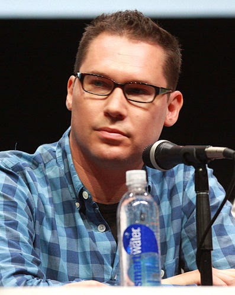
Bryan Singer - The Usual Suspects
Bryan Jay Singer (born September 17, 1965) is an American film and television director. He is known for big budget superhero films such as X-Men (2000), for which Singer won the 2000 Saturn Award for Best Direction, its sequel X2 (2003), and Superman Returns (2006). He then directed the WW II historical thriller Valkyrie (2008), and directed the fantasy adventure film Jack the Giant Slayer (2013).
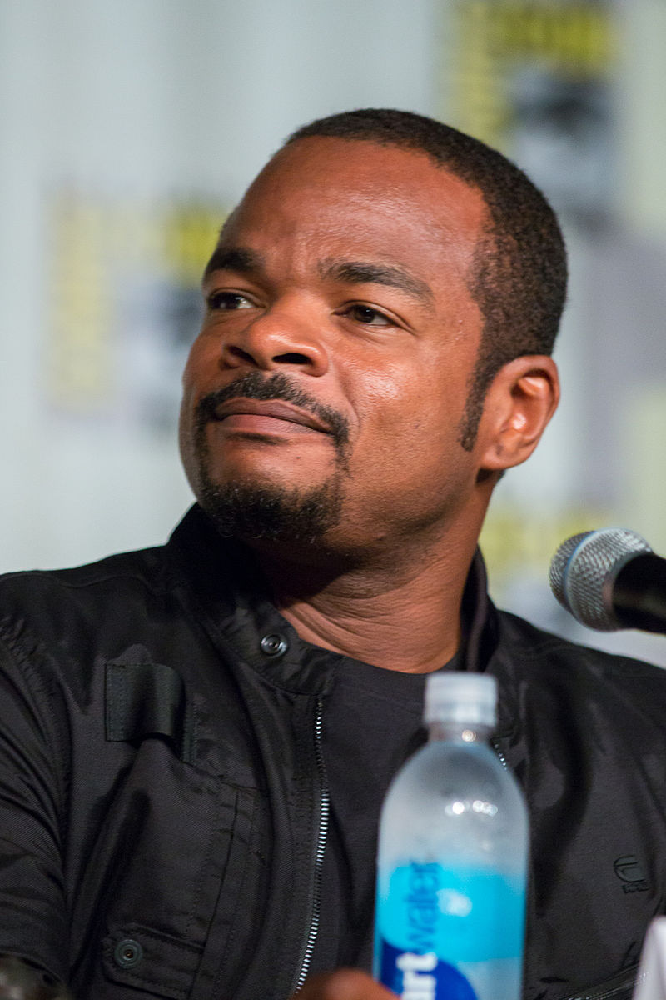
Felix Gray - The Italian Job
Felix Gary Gray (born July 17, 1969) is an american music video and film director. Gray is known for directing Friday (1995), The Negotiator (1998), and Straight Outta Compton (2015).